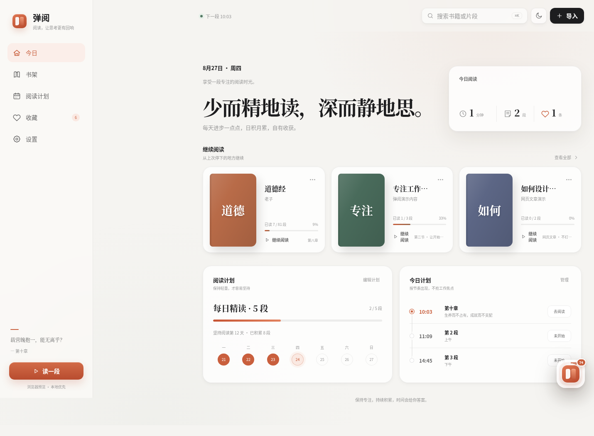
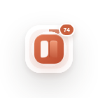
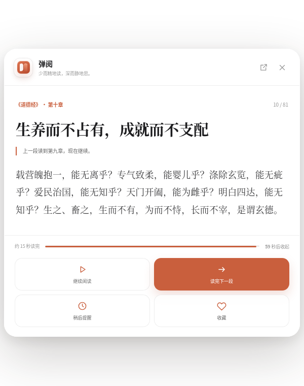
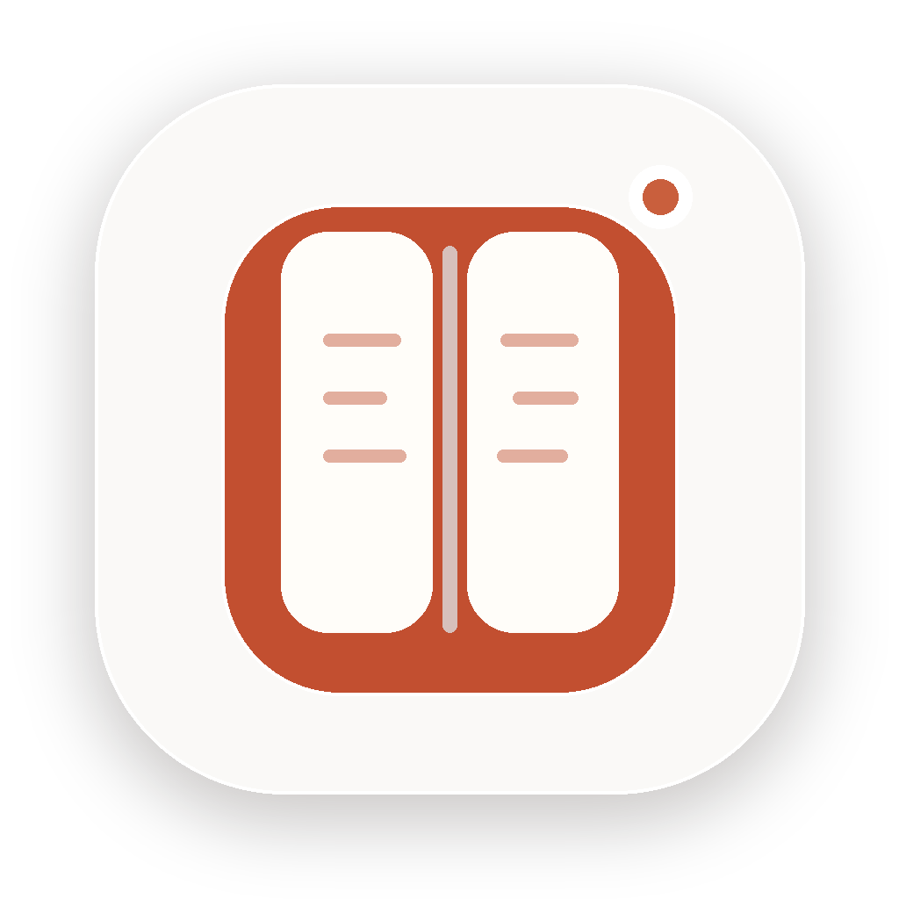
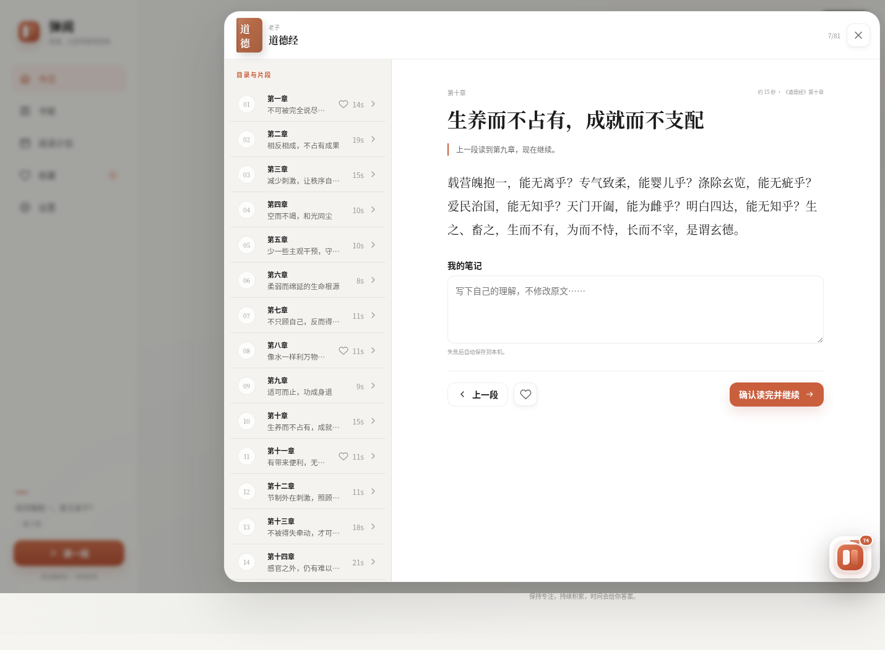

忙碌工作日 · 阅读总被推迟
想读书，却没有整块时间？
会议、消息、待办填满一天，真正属于阅读的，往往只是几个短暂间隙。
09:58 · 会前 2 分钟
12:40 · 午间片刻
15:20 · 等待回复

弹阅 · 桌面微阅读
把长内容，变成可完成的小片段
书籍文档网页
20～90 秒每段保持完整语义，利用工作间隙读完


轻量出现
一张阅读卡片，安静抵达桌面
不强制全屏，不打断正在输入的工作，正文始终是视觉主角。
不抢焦点 · 可随时关闭

节奏由你决定
阅读提醒，不等于强迫打卡
读完并继续 进入下一段 →
稍后提醒 保留当前位置
今天暂停 今天不再打扰
随时拒绝、随时恢复，没有惩罚式连续打卡。


准确接续
每本书，都记得自己的位置
道德经
毛泽东选集
专注工作
独立保存阅读进度切换书籍后，仍从上次停下的位置继续。
需要沉浸时
展开完整阅读，不丢失上下文
微读与连续阅读，共用同一接续位置。

导入自由 · 数据安心
复杂来源交给 Agent，内容与进度留在本机
TXT
Markdown
Agent JSON
→
100% 覆盖复核
无漏段 · 无重复
→
本地 SQLite
书籍 · 进度 · 笔记



弹阅 TANYUE
少而精地读，深而静地思。
让阅读自然发生在每一个小间隙。



上班太忙，想读书
却总抽不出整块时间
弹阅，把书籍、文档和网页
整理成 20～90 秒的完整片段
在工作的间隙
一张轻量阅读卡片安静出现
不抢焦点
读完下一段、稍后提醒、今天暂停
节奏始终由你决定
每本书独立保存进度
切换后，也能从上次的位置准确接续
需要沉浸时，展开连续阅读
目录、收藏和笔记都在手边
支持 TXT、Markdown 和 Agent 导入
本地严格校验，内容覆盖 100%
数据默认保存在电脑里
少而精地读，深而静地思
弹阅，让阅读发生在每个小间隙